Riemann for Anti-Dummies Part 33
HYPERBOLIC FUNCTIONS - A FUGUE ACROSS 25 CENTURIES
When the Delians, circa 370 B.C., suffering the ravages of a plague, were directed by an oracle to increase the size of their temple's altar, Plato admonished them to disregard all magical interpretations of the oracle's demand and concentrate on solving the problem of doubling the cube. This is one of the earliest accounts of the significance of pedagogical, or spiritual, exercises for economics.
Some crises, such as the one currently facing humanity, require a degree of concentration on paradoxes that outlasts one human lifetime. Fortunately, mankind is endowed with what LaRouche has called, ``super-genes,'' which provide the individual the capacity for higher powers of concentration, by bringing the efforts of generations past into the present. Exemplary is the case of Bernhard Riemann's 1854 habilitation lecture, On the Hypotheses that Underlie the Foundations of Geometry, in which Riemann speaks of a darkness that had shrouded human thought from Euclid to Legendre. After more than 2,000 thousand years of concentration on the matter, Riemann, standing on the shoulders of his teacher, Carl F. Gauss, lifted that darkness, by developing what he called, ``a general concept of multiply-extended magnitude.''
Riemann's concept extended the breakthroughs already put forward by Gauss, beginning with his 1799 dissertation on the fundamental theorem of algebra. Like its predecessor, it is a devastating refutation of the ``ivory tower'' methods of Euler, Lagrange, et al. that dominate the thinking of most of the population today, just as it dominated the minds of the Delians and the other unfortunate Greeks of Plato's time. Recognizing that all problems of society were ultimately subjective, Plato prescribed (in The Republic) that mastery of pedagogical exercises, (in the domain of music, geometry, arithmetic, and astronomy) be a prerequisite for political leadership. Only if leaders developed the capacity to free themselves, and then others, from this wrong-headedness, could crises, like the one facing us (or that which faced the Delians), be vanquished.
These exercises accustom the mind to shift its attention from the shadows of sense perception, to the discovery of knowable, but unseen truths, that are reflected to us as paradoxes in the domain of the senses. The process is never-ending. With each new discovery, new paradoxes are brought to the surface, which provoke still further discoveries, producing an ever greater concentration of the requisite quality of mind that produced the discovery in the first place.
Doubling of the Line, Square, and Cube
Such is the context for concentrating on the 2,500-year investigation of the paradoxes initially posed by the problem of doubling the line, square, and cube. These objects appear, visually, to be similar. The square is made from lines, while the cube is made from squares. Yet, when subjected to an action, such as doubling, it becomes evident that while these objects appear visibly similar, their principle of generation is vastly different.
The Pythagoreans, who learned from the Egyptians, reportedly, were the first Greeks to investigate this paradox. Recognizing that these visibly similar, but knowably different, objects were all contained in one universe, they sought a unifying principle that underlay the generation of all three. That unifying principle could not be directly observed, but its existence could be known, through its expression, as a paradox, lurking among the shadows that were seen.
Nearly 80 years before Plato's rebuke of the Delians, Hippocrates of Chios offered an insight based on the Pythagorean principle of the connection among music, arithmetic, and geometry. The Pythagoreans had recognized relationships among musical intervals, which they called: the arithmetic and the geometric. The arithmetic mean is found when three numbers are related by a common difference: b - a = c - b. For example, 3 is the arithmetic mean between 1 and 5. (see Figure 1a).
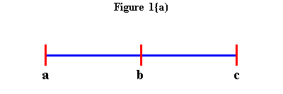 |
The geometric mean is when three numbers are in constant proportion, a:b::b:c. For example, 2:4::4:8. (see Figure 1b ).
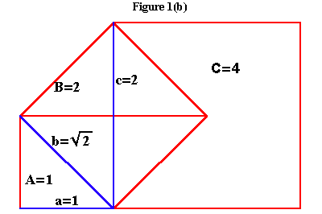 |
Hippocrates recognized that the arithmetic relationship is expressed by the intervals formed when lines are added, and that the geometric is expressed by the intervals when squares, or more generally, areas, are added. The formation of solid figures, being of a still higher power, did not correspond directly to any of these musical relationships. Nevertheless, the shadow cast by the doubling of the cube, expressed a relationship that corresponded to finding two geometric means between two extremes (see Figure 1c).
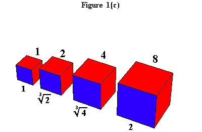 |
Plato, in the Timaeus, explains the significance of Hippocrates' insight:
``Now that which is created is of necessity corporeal, and also visible and tangible.... But it is not possible that two things alone be joined without a third; for in between there must needs be some bond joining the two.... Now if the body of the All had had to come into being as a plane surface, having no depth, one mean would have sufficed to bind together both itself and its fellow-terms; but now it is otherwise, for it behooved it to be solid in shape, and what brings solids into harmony is never one mean, but always two.''
In the Epinomis, Plato says of the investigations of the arithmetic and geometric means, ``a divine and marvelous thing it is to those who contemplate it and reflect how the whole of nature is impressed with species and kind according to each proportion as power.... To the man who pursues his studies in the proper way, all geometric constructions, all systems of numbers, all duly constituted melodic progressions, the single ordered scheme of all celestial revolutions, should disclose themselves, and disclose themselves they will, if, as I say, a man pursues his studies aright with his mind's eye fixed on their single end. As such a man reflects, he will receive the revelation of a single bond of natural interconnection between all these problems. If such matters are handled in any other spirit, a man, as I am saying, will need to invoke his luck. We may rest assured that without these qualifications the happy will not make their appearance in any society; this is the method, this the pabulum, these the studies demanded; hard or easy, this is the road we must tread.''
While the initial reported reaction to Hippocrates was that he had turned one impossible puzzle into another, others saw his insight as a flank. If the construction of two means between two extremes could be carried out among the shadows, the result could be applied to double the cube. Plato's collaborator, Archytas of Tarentum, supplied a solution by his famous construction involving a cylinder, torus, and cone. (See Figure) This demonstrated that the required construction could only be carried out, not in the flat domain of the shadows, but in the higher domain of the curved surfaces. Archytas' result is consistent with the discovery of the Pythagoreans, Theatetus, and Plato, of the construction of the five regular solids from the sphere.
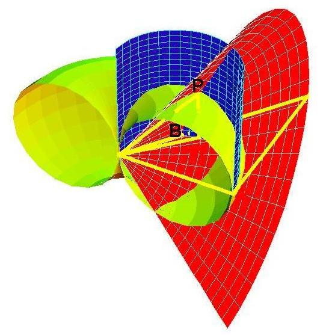 |
Menaechmus' Discovery
Plato's student, Menaechmus, supplied a further discovery, by demonstrating that curves generated from cones possessed the power to produce two means between two extremes. As the accompanying diagrams illustrate, the parabola possesses the characteristic of one mean between two extremes, while the hyperbola embraces two (see Figures 2a and Figure 2b, and Animation 1a and Animation 1b).
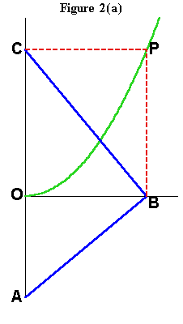 |
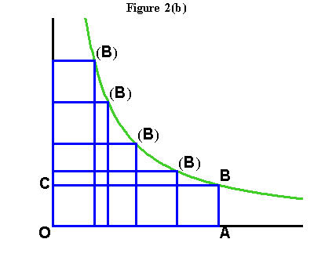 |
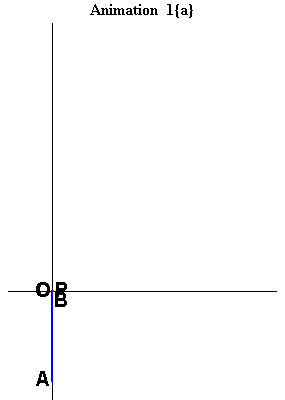 |
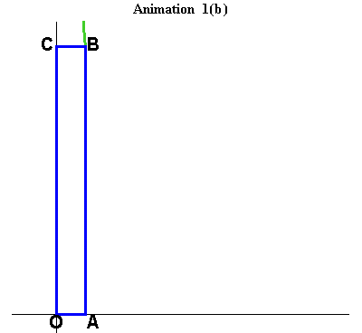 |
Menaechmus showed that the intersection of an hyperbola and a parabola produces the result of placing two means between two extremes (Figure 3).
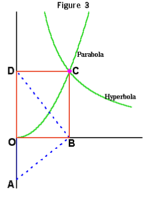 |
Embedded in the discoveries of Archytas and Menaechmus was a principle that would not fully blossom until 2,200 years later, with the discoveries of Riemann and Gauss. Archytas' solution depended on a characteristic possessed by the curve formed by the intersection of the cylinder and torus. This curve could not be drawn on a flat plane, because it curved in two directions. Gauss would later define this characteristic as "negative" curvature.(Figure 4).
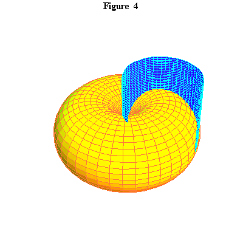 |
However, Menaechmus' construction using a parabola and hyperbola, is carried out entirely in the flat domain of the shadows. Nonetheless, for reasons that would not become apparent until Gottfried Wilhelm Leibniz in the 17th Century, Menaechmus' solution worked because it contained this same principle of negative curvature as did Archytas'.
Because of the lack of extant original writings, it is difficult to know how conscious these ancient Greek investigators were of the principle which Gauss would call negative curvature. What is known, is that these Greeks knew that the principle that determined action in the physical universe, was a higher principle than that which dominated the flat world of areas. The principles governing solid objects, thus, depended on curves, generated by a higher type of action in space, which, when projected onto the lower domain of a plane, exhibited the capacity of putting two means between two extremes. These curves combined the arithmetic and the geometric into a One. When this principle was applied in the higher domain of solid objects, it produced the experimentally validatable result.
This demonstrates, as Plato makes clear, not simply a principle governing the physical realm, but the multiply-connected relationship between the spiritual and the material dimensions of the universe; hence the appropriateness of ``pedagogical,'' or ``spiritual exercises.''
Kepler's Study of Conic Sections
The next significant step was accomplished by Johannes Kepler, who established modern physical science as an extension of these ancient Greek discoveries as those discoveries were re-discovered by Nicolaus of Cusa, Luca Pacioli, and Leonardo da Vinci. Kepler, citing Cusa, whom he called ``divine,'' placed particular importance on the difference between the curved (geometric) and the straight (arithmetic).
``But after all, why were the distinctions between curved and straight, and the nobility of a curve, among God's intentions when he displayed the universe? Why indeed? Unless because by a most perfect Creator it was absolutely necessary that a most beautiful work should be produced,'' Kepler wrote in the Mysterium Cosmographicum.
As part of his astronomical research, Kepler mastered the compilation of Greek discoveries on these higher curves contained in Apollonius' {Conics.} As a result of his investigation of refraction of light, Kepler reports a revolutionary new concept of conic sections. For the first time, Kepler considered the conic sections as one projective manifold:
``[T]here exists among these lines the following order by reason of their properties: It passes from the straight line through an infinity of hyperbolas to the parabola, and thence through an infinity of ellipses to the circle. Thus the parabola has on one side two things infinite in nature, the hyperbola and the straight line, the ellipse and the circle. For it is also infinite, but assumes a limitation from the other side.... Therefore, the opposite limits are the circle and the straight line: The former is pure curvedness, the latter pure straightness. The hyperbola, parabola, and the ellipse are placed in between, and participate in the straight and the curved, the parabola equally, the hyperbola in more of the straightness, and the ellipse in more of the curvedness.'' (See Figure 5 and Animation 2.)
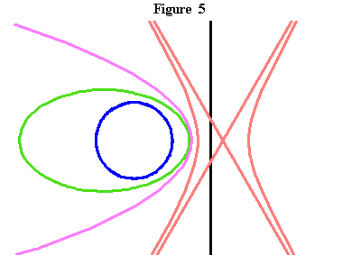 |
Animation 2 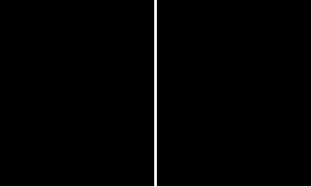 |
Of significance for this discussion is the discontinuity revealed by this projection between the parabola and the hyperbola. The hyperbola stands on the other side of the infinite, so to speak, from the ellipse and the circle, while the parabola has one side toward the infinite and the other toward the finite.
From Fermat to Gauss
The significance of this infinite boundary begins to become clear from the standpoint of Pierre de Fermat's complete re-working of Apollonius' Conics and the subsequent development of the calculus by Leibniz and Jean Bernoulli, with a crucial contribution supplied by Christian Huyghens.
Huyghens recognized that the curved and the straight expressed themselves in the hyperbola differently than in the other conic sections. His insight was based on the same principle recognized by Menaechmus, that the hyperbola, when projected onto a plane, was formed by a series of rectangles whose area was always equal. As one of the sides of each rectangle got longer, the other side got inversely smaller. Huyghens focused his attention on the area bounded by the hyperbola and the asymptote, which is the area formed by an ever-changing rectangle whose area is always the same (Figure 6). Areas between the hyperbola and the asymptote, formed by rectangles whose sides are in proportion, are equal. Consequently, as the diagram illustrates, those sections of the hyperbola, formed as the distance along the asymptote from the center increases geometrically, are equal. Thus, as the areas increase arithmetically, the lengths along the asymptote increase geometrically. Don't miss the irony of this inversion: In the hyperbola, the (geometric) areas grow arithmetically, while the (arithmetic) lengths grow geometrically!
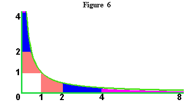 |
As has been presented in previous installments of this series, this combined relationship of the arithmetic with the geometric was discovered by Leibniz to be expressed by the physical principle of the catenary. Leibniz demonstrated that the catenary was formed by a curve, which he called ``logarithmic,'' today known as the ``exponential.'' This curve is formed such that the horizontal change is arithmetic, while the vertical change is geometric. The catenary, Leibniz demonstrated, is the arithmetic mean between two such ``logarithmic'' curves (Figure 7).
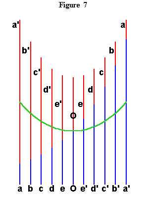 |
From here we are led directly into the discovery of Gauss and Riemann through Leibniz' and Bernoulli's other catenary-related discovery: The relationship of the catenary to the hyperbola(1). This relationship is formed from Huyghens' discovery. The equal hyperbolic areas define certain points along the hyperbola, that are ``projected'' onto the axis of the hyperbola, by perpendicular lines drawn from axis to those points. These projections produce lengths along the axis, that are the same lengths that, as Leibniz showed, produced the catenary! (See Figure 8a, Figure 8b, Figure 8c and Figure 8d.)
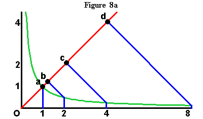 |
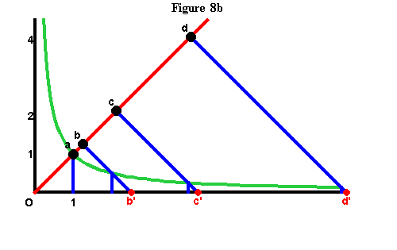 |
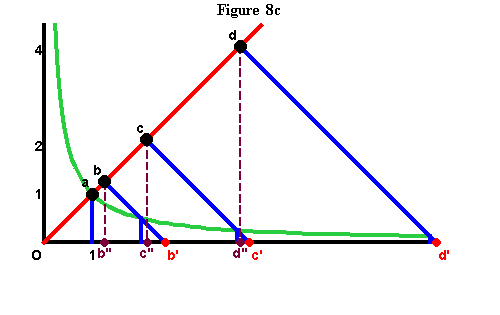 |
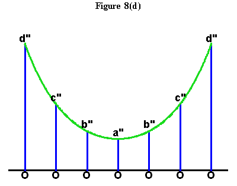 |
The implications of this discovery become even more clear when viewed from the standpoint of Gauss' investigation of curved surfaces that arose out of his earlier work on the fundamental theorem of algebra, geodesy, astronomy, and biquadratic residues. To complete this discussion, focus on Gauss' extension of the investigations of curves, into the investigation of the surfaces which contain them. Surfaces that contained curves with the characteristics of the hyperbola or catenary, Gauss called ``negatively'' curved, while surfaces that were formed by curves with the characteristics of circles and ellipses, he called ``positively'' curved(2). (See Figures 9.)
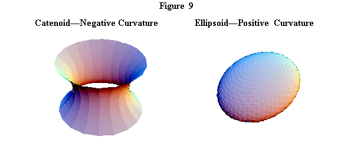 |
Now think back over this 2,500-year fugue. The principle underlying the constructions of Archytas and Menaechmus; the discontinuity expressed by the infinite boundary between the hyperbola and parabola; the inversion of the geometric and arithmetic in the hyperbola: From Gauss' perspective, these all reflect a transformation between negative and positive curvature.
Thus, to investigate action in the physical universe, it is necessary to extend the inquiry from simple extension to curvature and from simple curves to the surfaces that contain them. This, as will be developed in future installments, can only be done from the standpoint of Gauss and Riemann's complex domain.
NOTES
1. It should be noted that this discovery has been the victim of such a widespread pogrom initiated by Euler, Lagrange, and carried into the 20th Century by Felix Klein et al., that the mere discussion of it with anyone exposed to an academic mathematics education, is likely to provoke severe outbreaks of anxiety.
2. The reason for the names ``negative'' and ``positive'' will be discussed in a future installment.
{kind=link}
{kind=link}
{kind=link}
{kind=link}
{kind=link}
{kind=link}
{kind=link}
{kind=link}
{kind=link}
{kind=link}
{kind=link}
{kind=link}
{kind=link}
{kind=link}
{kind=link}
{kind=link}
{kind=link}
{kind=link}
{kind=link}